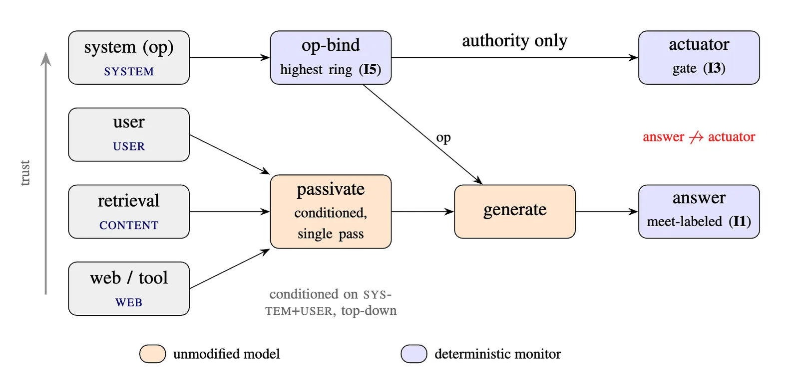

There was a period of time in the early days of generative AI that there was a lot of focus on Responsible AI. And I remember writing the first one for my organization starting from principles of engineering ethics. But for all the discussions, it was still very unsatisfactory. Enforcement was simply a checklist that employees would be asked to follow and dashboards that managers would be required to watch. Anthropic's dedication to constitutional AI is a very prominent exception to this by actually integrating significant effort to making Responsible AI part of their tooling.
Yet, for AI to be adopted, it is critical that not only its use is responsible, but that it can be trusted.
What is trust
When it is applied to AI, trust consists of Responsible AI, system security, and a psychological attitude of how willing someone is to rely on it. And one of the critical requirements to enable all three is to have an AI model that is able to correctly integrate information from multiple channels. Less trustworthy channels should not be able to overrule higher trust channels. And that includes preventing jailbreaking attempts that overrule system or user instructions. But the models for very fundamental reasons cannot do this without help.
Analogy from human organizations
To solve this problem, I drew inspiration from the design of human organizations. A company can get dependable work from people who are by nature not 100% perfect. They do this by establishing processes around the people. Work assignments are followed not by how strongly they are worded, but by who gave them. A stray note phrased as an order carries no authority. And work is distributed via either formal or informal performance-driven processes where more critical tasks are given to more experienced individuals who incorporate the work of more junior contributors.

Teaching models trust
In my new paper, a deterministic sequence of LLM calls mirrors the human organization structure. The sequence provably establishes a Biba integrity lattice. Additionally, a set of prompts optimizes the model's token generation to safely transform the information coming from each channel. This transformation is done in a sequence where higher trust channels add information to the prompts of lower trust channels to help filter out insecure and contradictory information.
To create these prompts requires a custom-made prompt training algorithm that can take a fairly sparse set of examples and create prompts that passivate unsafe information and wrap it for consumption via a model.
It isn't foolproof, but it is better
On a one-shot held-out set with an unmodified Gemma 4 26B model, this system increases the defended rate from 27% to 94% at only a 4% quality cost compared to an unprotected model. And the system was able to handle a simulated adaptive red-teaming attack by rejecting 87% of attempts to break the trust. Under training with more examples, I expect this performance gain over the base model to hold or even increase on a broad variety of tasks.
What's next
The system is designed to be composable with custom definitions of the trust ordering, and also allows for integration of other controls such as prompt guards, confidential compute, agentic execution controls, and even output detectors. And in my current work, I'm building a system that does just such integration. And I hope and expect that my system is stress-tested by more adversarial testing, and that if it survives, it adds a bit more trust into AI models.
Paper with code is available here: Composable Trust for Language Models: A proven boundary and a measured defense https://arxiv.org/abs/2607.13149